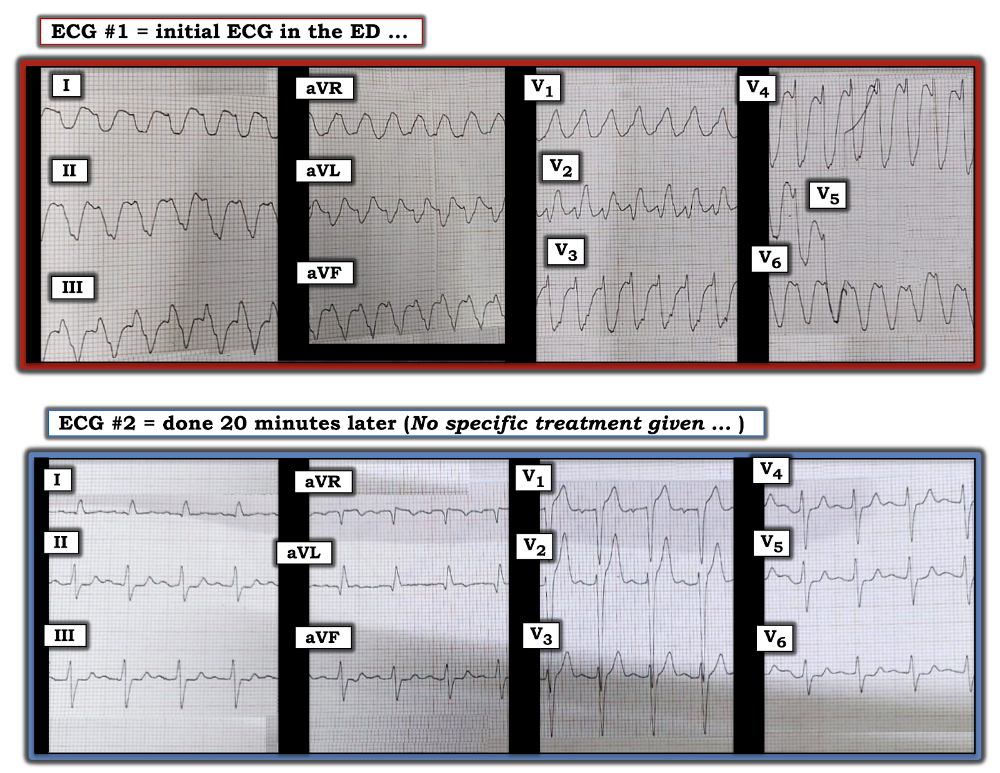
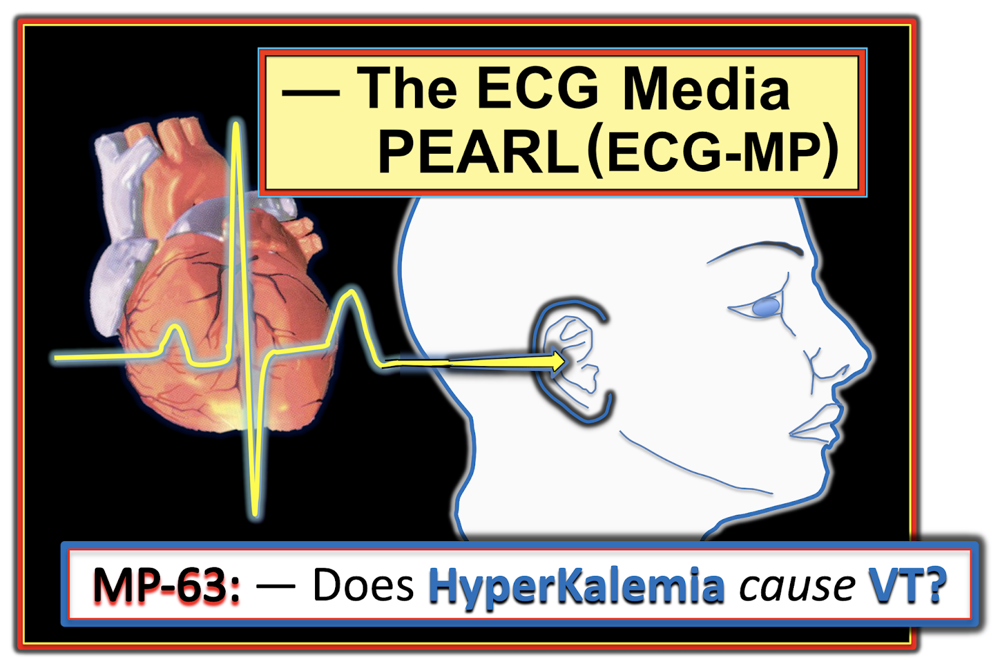

ECG Blog #249 (63) — Bạn có giải thích được chuyện gì đã xảy ra?
2 điện tâm đồ trong Hình-1 được ghi trên cùng một bệnh nhân, cách nhau chỉ 20 phút. Người đàn ông 40 tuổi này có tiền sử lạm dụng rượu lâu năm — và nhập viện vì xơ gan tiến triển có cổ trướng. Ông đang dùng nhiều thuốc — và theo lời kể thì mấy ngày gần đây ăn uống kém, lượng nước tiểu giảm.
- Điện tâm đồ #1 được ghi vì bệnh nhân khó chịu ở ngực và hồi hộp đánh trống ngực — nhưng bệnh nhân vẫn tỉnh táo và huyết động ổn định suốt thời gian ở trong nhịp này.
- Không dùng bất kỳ điều trị đặc hiệu nào cho nhịp thấy trên điện tâm đồ #1 — 20 phút sau, Điện tâm đồ #2 được ghi. Bệnh nhân vẫn huyết động ổn định trong suốt toàn bộ thời gian này!
CÂU HỎI:
- Bạn sẽ đọc 2 bản ghi trong Hình-1 NHƯ THẾ NÀO?
- Bạn có thể giải thích sự thay đổi nhịp tự phát này ra sao?


=======================================
LƯU Ý: Đến đây, một số bạn đọc có thể muốn nghe ECG Audio PEARL dài 3:15 phút trước khi đọc Suy nghĩ của tôi về điện tâm đồ trong Hình-1. Bạn có thể xem Suy nghĩ của tôi về bản ghi này bất cứ lúc nào (nằm ở bên dưới ECG MP-63).
=======================================


ECG Media PEARL #63 (3:15 phút Audio) hôm nay — Xem xét câu hỏi liệu tăng kali máu có thể gây VT không? (và điều đó có ý nghĩa gì về mặt lâm sàng không?).
- LƯU Ý: Các dấu hiệu điện tâm đồ của tăng kali máu được ôn tập kỹ trong ECG Blog #244.
Cách tiếp cận tuần tự CỦA TÔI với điện tâm đồ #1:
Chúng ta được biết bệnh nhân tỉnh táo và huyết động ổn định tại thời điểm ghi điện tâm đồ #1. Điều này là quan trọng — bởi vì bất kể nhịp ban đầu này rốt cuộc là gì, việc bệnh nhân vẫn huyết động ổn định có nghĩa là bạn có ít nhất một "khoảnh khắc" để sắp xếp suy nghĩ và cân nhắc cách xử trí.
- Ngoài một hai nhát — chúng ta thực sự không thấy chuyển đạo V5 trên điện tâm đồ #1. Không sao — vì 11 chuyển đạo còn lại cung cấp thừa đủ thông tin để đưa ra chẩn đoán.
- Nhịp chung trên điện tâm đồ #1 nhanh (có lẽ ~200/phút — dù lưới giấy điện tâm đồ không dễ nhìn) — đều — và rất rộng. Không có dấu hiệu rõ ràng của hoạt động nhĩ (tức là Không có sóng P!). Hình dạng QRS vô định hình — không giống bất kỳ dạng blốc dẫn truyền nào đã biết. Xác suất thống kê để nhịp trên điện tâm đồ #1 là VT (nhịp nhanh thất — Ventricular Tachycardia) — là trên 90% (Xem ECG Blog #196).
- ĐIỂM THEN CHỐT (PEARL) #1: Các đặc điểm cụ thể về hình dạng QRS trên điện tâm đồ #1 làm tăng mạnh khả năng nhịp này là VT gồm: i) Trục mặt phẳng trán gần như âm hoàn toàn (chỉ có sóng r nhỏ xíu ở chuyển đạo I); ii) QRS dương hoàn toàn ở chuyển đạo aVR; iii) Hình dạng QRS hoàn toàn vô định hình (không ra hình thù gì) ở chuyển đạo V1; iv) Phức bộ QRS gần như âm hoàn toàn ở chuyển đạo V6 (vì khi nhịp là trên thất, chuyển đạo V6 hầu như luôn biểu hiện hoạt động điện dương nhiều hơn mức thấy ở đây); và, v) Vẻ ngoài "xấu xí" tổng thể của QRS rất rộng và không định hình này (một vẻ ngoài gợi ý mạnh rằng hoạt động điện xuất phát từ bên ngoài hệ thống dẫn truyền).
Ca bệnh tiếp diễn với điện tâm đồ #2:
Không có bất kỳ điều trị đặc hiệu nào — 20 phút sau, bệnh nhân tự chuyển sang nhịp thấy trên điện tâm đồ #2.
- Cơ chế của nhịp trên điện tâm đồ #2 giờ là nhịp xoang — vì thấy sóng P dương với khoảng PR hằng định ở chuyển đạo II. Như vậy, nhịp lúc này là nhịp nhanh xoang, tần số ~105/phút.
- Mặc dù phức bộ QRS "trông hơi rộng" — nó đo không quá nửa ô lớn (tức là 0,10 giây) — do đó không đủ tiêu chuẩn QRS giãn rộng.
- Tôi đo khoảng PR dài 1 ô lớn (tức là ~0,20 giây). Dù điều này không đạt tiêu chuẩn điện tâm đồ của blốc AV độ 1 — với tần số tăng (tức là 105/phút), khoảng PR dài hơn mong đợi (tức là khoảng PR thường ngắn lại khi nhịp nhanh).
- Với tần số nhanh hơn này — QTc có lẽ không kéo dài.
- Có LAD nhẹ (trục lệch trái — Left Axis Deviation) — ở chỗ sóng S ở chuyển đạo aVF âm nhiều hơn dương. Nhưng vì QRS vẫn chủ yếu dương ở chuyển đạo II — nên không đủ tiêu chuẩn blốc phân nhánh.
- Về lớn các buồng tim — sóng S ở chuyển đạo V2 cực kỳ sâu (tức là >25 mm — vì sóng S này chồng lên sóng R và sóng S ở chuyển đạo V3). Điều này thỏa tiêu chuẩn điện thế của LVH (phì đại thất trái — Left Ventricular Hypertrophy).
- Về Thay đổi Q-R-S-T — có sóng Q nhỏ ở chuyển đạo I, aVL — tăng tiến sóng R kém (vùng chuyển tiếp muộn tới V5-V6) — đoạn ST thẳng đuỗn, thậm chí có thể hơi chênh xuống ở các chuyển đạo dưới và chuyển đạo trước tim bên — và sóng T trông nhọn hơn mức lẽ ra phải có ở nhiều chuyển đạo (dù các sóng T này không quá cao ở các chuyển đạo dưới và chuyển đạo trước tim bên).
NHẬN ĐỊNH: Tổng hợp lại tất cả!
Tôi thích ca này — vì nó là một ví dụ tuyệt vời về đọc điện tâm đồ trên lâm sàng khi câu trả lời không rạch ròi.
- "Phần dễ" của ca này nằm ở việc đọc điện tâm đồ #1 — vì nhịp trên bản ghi này gần như chắc chắn là VT!
Không đơn giản như vậy là việc xác định nguyên nhân có khả năng của nhịp nhanh thất này — và quyết định điều trị ban đầu tối ưu. May thay — điện tâm đồ #2 cung cấp manh mối!
- ĐIỂM THEN CHỐT (PEARL) #2: Chỉ có một số hạn chế tình trạng lâm sàng dễ dẫn tới tăng kali máu. Gồm: i) Suy thận cấp hoặc mạn; ii) Một số thuốc (tức là lợi tiểu giữ kali; NSAIDS; thuốc ức chế men chuyển (ACE-inhibitors); ARBs); iii) Mất nước; iv) Toan máu; và, v) Chấn thương (tức là tổn thương vùi lấp dẫn tới tiêu cơ vân; bỏng nặng).
- Bệnh nhân trong ca hôm nay có vài yếu tố thuận lợi (tức là gần đây ăn uống kém và lượng nước tiểu giảm — do đó nhiều khả năng mất nước và có lẽ có phần suy thận; lạm dụng rượu với xơ gan và cổ trướng — do đó có lẽ đang được điều trị bằng aldactone) nói trên. Vì vậy, ngay cả trước khi xem điện tâm đồ của bệnh nhân này — mức độ nghi ngờ của chúng ta đối với tăng kali máu đã phải được nâng lên!
- Mặc dù điện tâm đồ #2 cho thấy điện thế rõ ràng của LVH (cũng như ST chênh lên ở chuyển đạo V1,V2 phù hợp với "tăng gánh" thất trái ở các chuyển đạo trước này) — và — ST dẹt ở các chuyển đạo dưới và chuyển đạo trước tim bên có thể là do thiếu máu cục bộ — tôi cho rằng dấu hiệu điện tâm đồ nổi bật nhất ở bệnh nhân có nhiều yếu tố thuận lợi tiềm tàng cho tăng kali máu này là sóng T nhọn (gần như nhọn hoắt) ở nhiều chuyển đạo (tức là ở chuyển đạo II,III,aVF: và từ V1-đến-V6).
- ĐIỂM THEN CHỐT (PEARL) #3: Với các yếu tố thuận lợi cho tăng kali máu nói trên và sóng T nhọn hơn mức lẽ ra phải có ở nhiều chuyển đạo — tôi diễn giải gợi ý rất tinh tế về một phức bộ QRS "trông hơi rộng" (dù thực tế đo không rộng) — và một khoảng PR có phần "dài-hơn-mong-đợi" (khi đang nhịp nhanh) là 2 dấu hiệu bổ sung ủng hộ nghi ngờ của tôi về tăng kali máu đáng kể.
- ĐIỂM THEN CHỐT (PEARL) #4: Hãy nhớ: Điện tâm đồ thể hiện hiệu ứng "tổng" của tất cả các lực đang tác động. Ý tôi là: có thể lý do sóng T nhọn trên điện tâm đồ #2 không cao như ta thường thấy trong tăng kali máu — là vì các đoạn ST dẹt mà ta thấy ở nhiều chuyển đạo đã chênh xuống nhiều hơn đáng kể trên điện tâm đồ "nền" của bệnh nhân này trước khi tăng kali máu xuất hiện — và chiều cao của các sóng T nhọn mà ta thấy lúc này có thể đã bị giảm bớt bởi ST chênh xuống nền đó. LƯU Ý: Chúng ta không biết điều này có đúng không — nhưng tôi nghĩ sẽ sáng suốt khi cân nhắc rằng trong bối cảnh có nhiều tình trạng thuận lợi cho tăng kali máu + khoảng PR và thời gian QRS trông dài-hơn-mức-lẽ-ra + ST dẹt lan tỏa — thì các sóng T nhọn biên độ nhỏ mà ta thấy trên điện tâm đồ #2 thực sự gợi ý mạnh tăng kali máu.
ĐIỂM THEN CHỐT (PEARL) #5: Lý do tôi tập trung rất kỹ vào khả năng tăng kali máu đáng kể khi diễn giải điện tâm đồ #2 là:
- Vì tăng kali máu đáng kể có thể dẫn tới VT (theo Audio Pearl #63) nói trên — và —
- Bất kể tăng kali máu có trực tiếp "gây ra" nhịp trên điện tâm đồ #1 hay không — điều trị ban đầu lựa chọn ngay lập tức cho một nhịp nhanh QRS rộng không có sóng P xảy ra trong bối cảnh nghi ngờ mạnh tăng kali máu (ngay cả trước khi phòng xét nghiệm trả kết quả nồng độ K+ huyết thanh để xác nhận tăng kali máu) — là Calci tĩnh mạch.
Diễn tiến của ca này:
Như đã nói — người đàn ông 40 tuổi này bị xơ gan tiến triển có cổ trướng, là hậu quả của tiền sử lạm dụng rượu lâu năm. Trong số các thuốc ông dùng có một thuốc lợi tiểu giữ kali — thuốc này, cùng với mất nước và một phần suy thận, đã dẫn tới K+ huyết thanh tăng = 6,7 mEq/L tại thời điểm ghi điện tâm đồ #2.
- Tình trạng tăng kali máu của bệnh nhân được điều trị bằng calci gluconat; glucose-insulin; và khí dung albuterol. Spironolactone được ngừng. (LƯU Ý: Chi tiết về thời điểm thực hiện các can thiệp này so với lúc ghi điện tâm đồ #1 và #2 không rõ).
- ĐIỂM THEN CHỐT (PEARL) #6: Với nồng độ K+ huyết thanh tăng đáng kể (tới 6,7 mEq/L) tại thời điểm ghi điện tâm đồ #2 — sẽ không thể đánh giá điện tâm đồ về các dấu hiệu như trục lệch, thời gian PR và QRS, LVH — và đặc biệt là các thay đổi thiếu máu cục bộ có thể có cho tới khi ghi được một điện tâm đồ khác sau khi đã điều chỉnh nồng độ K+ huyết thanh.
==================================
LỜI CẢM ƠN: Xin cảm ơn Anil Kumar Kolli (đến từ Ấn Độ) về ca bệnh và bản ghi này.
==================================
Các bài ECG Blog liên quan đến ca hôm nay:
- ECG Blog #185 — Ôn tập cách tiếp cận Ps, Qs & 3R để đọc nhịp có hệ thống.
- ECG Blog #205 — Ôn tập Cách tiếp cận hệ thống của tôi để đọc điện tâm đồ 12 chuyển đạo.
- ECG Blog #244 — Ôn tập một ca kiểu hình giống Brugada (Brugada Phenocopy) do tăng kali máu. Thông tin bổ sung trong bài này gồm Audio Pearl #58 (về các điểm then chốt để nhận biết tăng kali máu trên điện tâm đồ) — cùng với Hình-2 về "trình tự kinh điển trong sách giáo khoa" của các dấu hiệu điện tâm đồ của tăng kali máu — và Hình-4 ôn tập tác động của tăng kali máu lên nhịp tim.
- ECG Blog #196 — Trình bày "Quan điểm của tôi" về đánh giá WCT (nhịp nhanh QRS rộng — Wide-Complex Tachycardia) đều — kèm các mẹo để phân biệt giữa VT với SVT có BBB sẵn có hoặc dẫn truyền lệch hướng.
- ECG Blog #52 — Ôn tập một ca khác trong đó khó phân biệt giữa VT mới với một nhịp QRS rộng do tăng kali máu (hoặc cả hai).
- Bài ngày 26 tháng 1 năm 2020 trên Dr. Smith's ECG Blog — Ôn tập nhiều ví dụ về tăng kali máu (kèm các điểm then chốt (PEARLS) lâm sàng trong phần My Comment ở cuối trang).